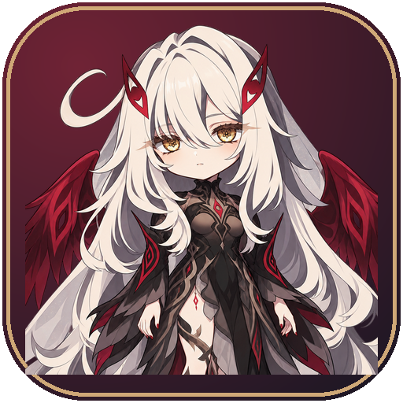

RONOVA · PRIVATE AUDIENCE
⚙

若娜瓦
死之执政
余烬之间
·
今夜，允许片刻停留
桌面陪伴中
THE STILLNESS AFTER THE FLAME
✦
此刻 · 余烬未息
RONOVA
✦
不必拘谨。既然在这里，你的话，我会听。
……但桌边的那份点心，暂归我保管。
✦
陪我片刻
◈
递个点心
♡
轻轻摸头
▤
偷看账册
写给若娜瓦的话
Enter 发送
·
Shift + Enter 换行
■ 停止
送达
↗
A QUIET AGREEMENT
连接与陪伴
×
接好这条细线，她便能与你交谈。密钥仅保存在这台电脑。
DeepSeek API Key
显示
接口地址
模型
如何称呼你
偶尔自言自语
你忙的时候，听她轻声念叨几句
自言自语间隔
分钟
桌面活跃程度
安静守候
恰到好处
偶尔调皮
开机时相见
登录 Windows 后自动启动桌宠
约定生效
✦